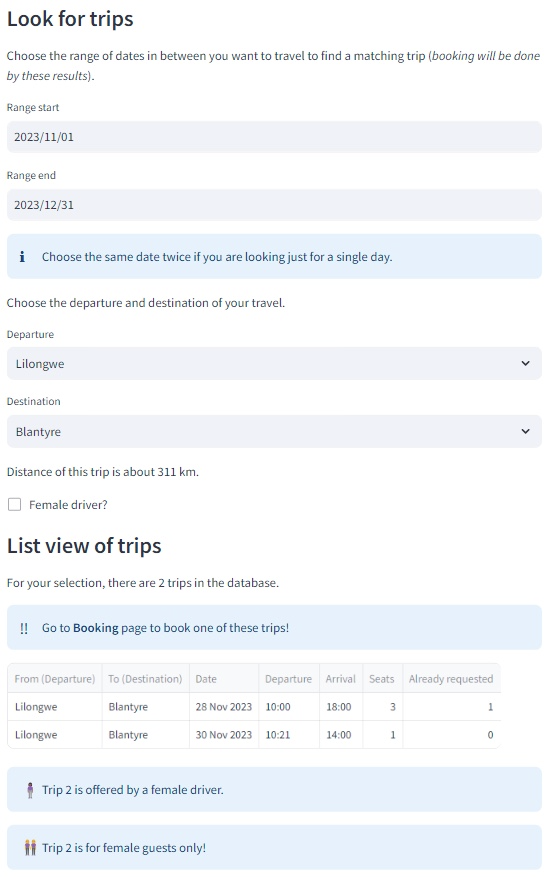

The Hitchhiking menu let's you find planned trips.
Under the menu Hitchhiking you can find the following selections:
If you don't find a trip try to change the parameters slightly (for instance choose an alternate date).

You can select out of following cites:
Lilongwe, Balaka, Blantyre, Chikhwawa, Chitipa, Dedza, Dowa, Karonga, Kasungu, Machinga, Mangochi, Mchinji, MonkeyBay, Mulanje, Mwanza, Mzimba, Mzuzu, Neno, NkahataBay, Nkhotakota, Nsanje, Ntcheu, Ntchisi, Phalombe, Rumphi, Salima, Thyolo, Zomba.
This offers distance calculation for your trip and also let the planner find matching trips, even if your starting and end points are not the same as the offered trip (if your Departure and Destination is on the route).
If your departure or destination is not in this list, please choose the cities quite next to it as departure / destination.